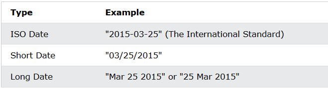

There are generally 3 types of JavaScript date input formats:
Independent of input format, JavaScript will (by default) output dates in full text string format:
ISO 8601 is the international standard for the representation of dates and times.
The ISO 8601 syntax (YYYY-MM-DD) is also the preferred JavaScript date format:
The computed date will be relative to your time zone.
Depending on your time zone, the result below will vary between March 24 and March 25.
ISO dates can be written without specifying the day (YYYY-MM):
Time zones will vary the result above between February 28 and March 01.
ISO dates can be written without month and day (YYYY):
Time zones will vary the result above between December 31 2014 and January 01 2015.
ISO dates can be written with added hours, minutes, and seconds (YYYY-MM-DDTHH:MM:SSZ):
Date and time is separated with a capital T.
UTC time is defined with a capital letter Z.
If you want to modify the time relative to UTC, remove the Z and add +HH:MM or -HH:MM instead:
UTC (Universal Time Coordinated) is the same as GMT (Greenwich Mean Time).
Omitting T or Z in a date-time string can give different results in different browsers.